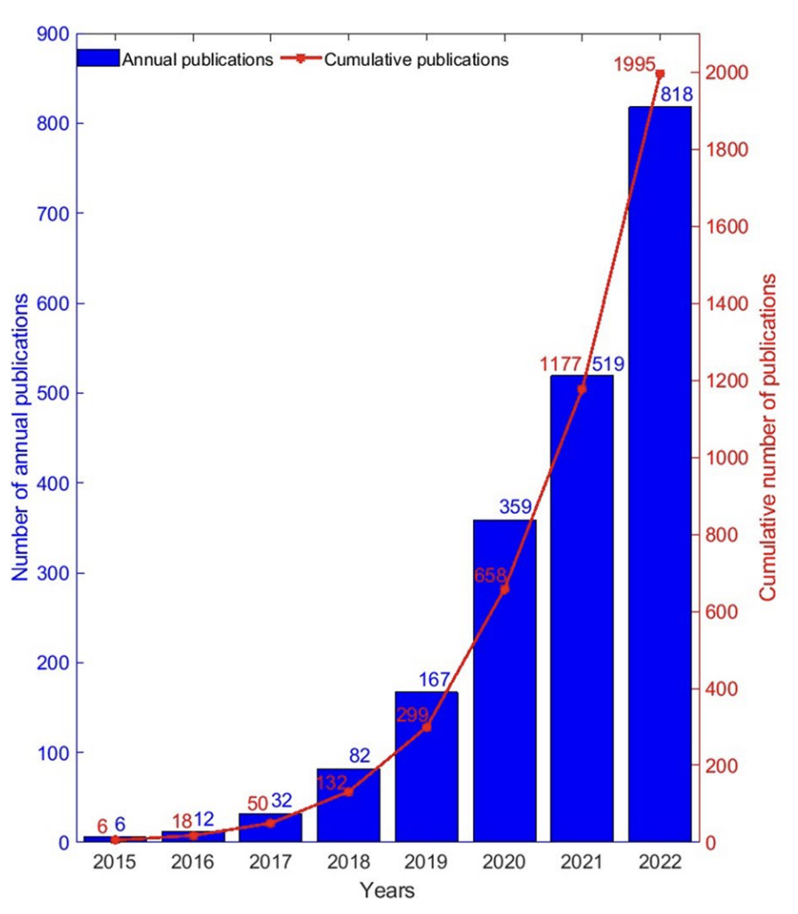
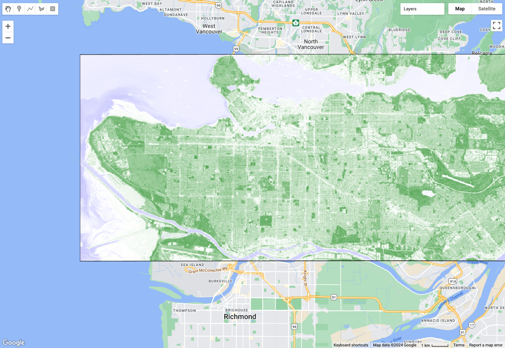
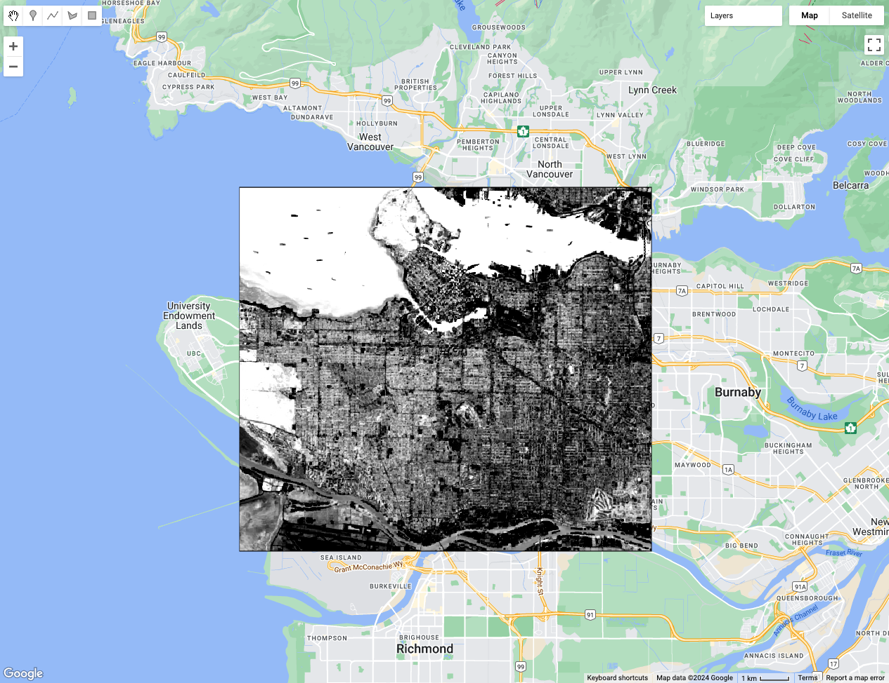
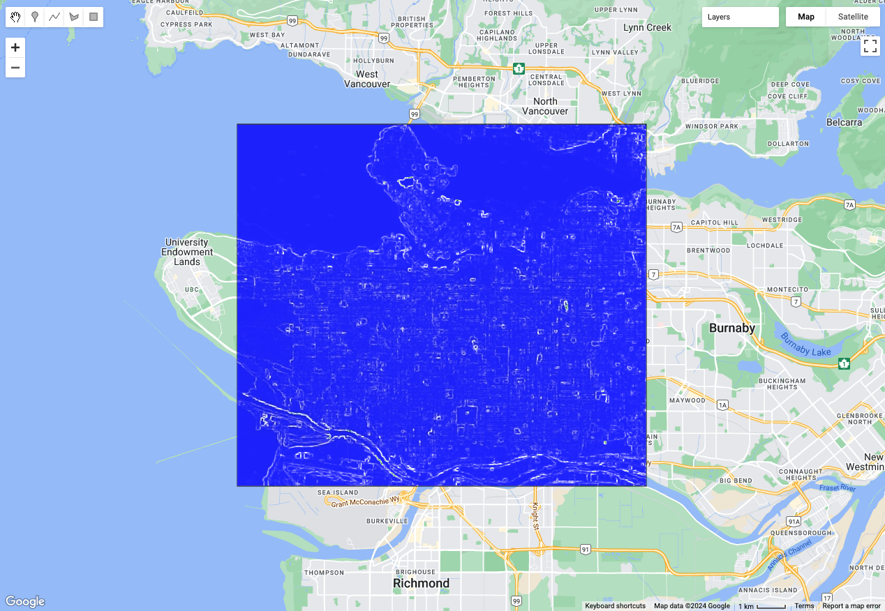

6 Week 6
7 Google Earth Engine
7.1 1 Summary
Sorry in advance for the length of this entry, Google Earth Engine (GEE) is an amazing tool and conducting analysis on my hometown was a real joy.
This week we learned the basics of Google Earth Engine. GEE is a truly amazing tool. It allows users to sidestep the labourious process of downloading and processing satellite imagery and instead, users can access and analyse earth observation data directly in the cloud. GEE makes dealing with remote sensing data incredibly accessible and I intend to erase my experiences with SNAP from my memory.
This week’s lecture started with a slide which illustrated the exponential uptake of GEE. The slide shows that the number of academic publications using GEE has increased exponentially since 2013.
7.1.0.1 Figure 1: The Number of Academic Publications Using Google Earth Engine
In simple terms it provides a way to access and analyse satellite imagery and other geospatial data. GEE dramatically reduces the time to conducting analysis on remote sensing data by allowing users to bypass the need to download and process the data to your local machine using QGIS or SNAP.
Below I’ve used GEE to conduct a few analyses using methods we’ve learned about over the past few weeks. I’ve used Vancouver as a case study here. I thought it would interesting to see how its distinctly north american ‘grid system’ would appear.
The key features of GEE:
Data Catalog: Google Earth Engine provides access to a diverse and continuously expanding catalog of satellite imagery datasets
Analysis Tools: It offers a set of tools and algorithms for processing and analysing geospatial data (image classification, time-series analysis, object detection, change detection etc.)
Code Editor: The Earth Engine Code Editor provides an interactive development environment where users can write, test and run geospatial analysis code
Visualisation: GEE allows users to visualise geospatial data and analysis results in interactive maps. A user can explore and interact with the data layers.
However, in my opinion, the most impressive characteristic of GEE is its ability to dynamically represent data.
7.1.0.2 NDVI Analysis
NDVI Analysis assesses vegetation health and coverage in a given area. By comparing the reflectance of near-infrared and red light, NDVI helps in distinguishing between vegetated and non-vegetated surfaces, indicating plant health and biomass. High indexes are seen in Stanley park, the large green area seen at the top of the window and on the left tip of the city is the University Endowment Lands, an old growth protected area where the University of British Columbia is located. Due to housing shortages in the city, several acres of this protected area have sadly been approved for development. I will be checking to see how this area changes over the next few years.

7.1.0.3 PCA
In essence, Principal Component Analysis is used to emphasise variation and bring out patterns in a dataset. In remote sensing, PCA transforms correlated bands in an image into uncorrelated variables or principal components. This method is useful for enhancing the differences of satellite imagery while retaining most of the original information “…often revealing hidden patterns in the data.”

7.1.0.4 Texture Analysis
Finally Texture Analysis involves evaluating the spatial arrangement of colors or intensities in an image to identify patterns or structures. By applying methods such as GLCM, texture analysis can highlight areas of contrast or uniformity which can provide insights about the physical characteristics and differences of the surface. This technique is useful for things like classifying land cover, detecting change and understanding the structure features in the landscape.

7.2 2 Applications
I watched Noah Gorelick’s lecture on machine learning in GEE. As a result I ended up diving into another one of his papers, Google Earth Engine: Planetary-scale geospatial analysis for everyone, published in 2017. Gorelick mentions a plethora of different ways you can leverage GEE for analysis, some of those include:
- Global Forest Change Monitoring: GEE has been used to characterise global forest extent, loss and gain using decision trees and large collections of Landsat scenes
- Water Resources Management: GEE enables the detailed monitoring of water bodies’ extent, health, and surface water changes globally
- Agricultural Monitoring and Yield Estimation: Leveraging GEE for agricultural monitoring, specifically for estimating crop yields by relating output from crop model simulations
- Urban Expansion and Land Use Change Detection: The platform supports the analysis of urban expansion and land use changes
The real strength/utility of GEE is in the speed it can analyse data. This means you can look at much bigger areas and do more studies than before. To me, this seems like a big deal for studying the environment because it helps us understand and make decisions faster.
A tangible example of the strength and utility of GEE is its role in the Global Forest Watch initiative. This platform uses GEE to monitor deforestation around the world in near-real-time. Traditionally, analysing satellite images to detect changes in forest cover over vast areas like the Amazon rainforest would take months.
7.3 3 Reflections
Google Earth Engine has proven to be an incredibly useful tool from a business perspective, offering a wide range of applications that span from environmental monitoring to urban planning and agricultural management. Its vast repository of satellite imagery and geospatial data allows for real-time environmental monitoring, making it an indispensable tool for businesses that require up-to-date geographical information to make informed decisions. For instance, in agriculture, Google Earth Engine enables the analysis of crop health over vast areas, aiding in the efficient management of resources and ultimately leading to increased productivity and reduced costs.
From a user experience standpoint, Google Earth Engine is remarkably mature. Its interface is both intuitive and user-friendly, making it accessible to professionals across various sectors, regardless of their technical expertise in geospatial analysis. The platform’s ability to handle large datasets and perform complex spatial analyses in the cloud, without the need for powerful local computing resources, is particularly impressive. This cloud-based approach not only streamlines workflows but also facilitates collaborative projects by allowing teams to share data and insights seamlessly.
Moreover, Google Earth Engine’s extensive library of algorithms and models, combined with its support for multiple programming languages, including JavaScript and Python, offers flexibility and efficiency in processing and analysing geospatial data. This adaptability is crucial for businesses that need to tailor their analyses to specific requirements.
In summary, Google Earth Engine’s comprehensive data resources, coupled with its sophisticated yet accessible analytical tools, make it an invaluable asset for businesses seeking to leverage geospatial data for strategic decision-making. Its mature user experience ensures that even those with limited experience in spatial data science can harness the power of geospatial analytics to drive innovation and efficiency in their operations.